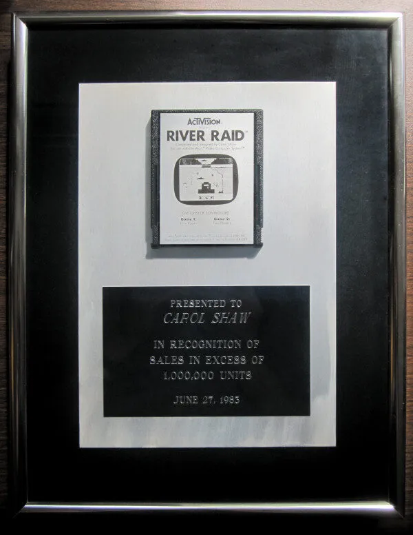
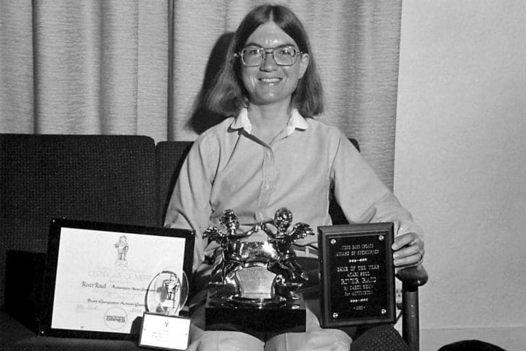

Feliz dia das mulheres!
--- Vamos falar um pouco da Carol Shaw ---
Shaw é a primeira mulher a trabalhar na indústria de games, sendo uma das principais pioneiras para a igualdade de gêneros nesse segmento. Primeiro, a desenvolvedora trabalhou em Polo, e na sequência lançou comercialmente o primeiro jogo criado por uma mulher: era o 3-D Tic-Tac-Toe, de 1979, baseado no tradicional jogo da velha. Depois, entrou na Activision, onde programou River Raid em 1983 – seu game mais famoso.
Nascida na Califórnia (Estados Unidos) em 1955, Shaw sempre esteve na região do Vale do Silício e, naturalmente, foi influenciada pela revolução tecnológica que ali aconteceu. Seu pai era um engenheiro mecânico que trabalhava no Stanford Linear Accelerator Center (um laboratório que trabalhava com projetos energéticos para o governo), e Carol começou a se interessar pelo universo dos computadores enquanto estava no ensino médio, quando usou um computador pela primeira vez e descobriu que podia jogar games baseados em texto no sistema BASIC.
Depois de passar rapidamente pela Tandem Computers, Shaw foi contratada como engenheira de softwares pela Atari logo que se formou na universidade, foi lá que Carol Shaw desenvolveu seus dois primeiros jogos (Polo e 3-D Tic-Tac-Toe, ambos para o Atari 2600). Saindo da companhia que se tornou o símbolo da revolução dos videogames no mundo, Shaw foi trabalhar na Activision, que, na época, fabricava cartuchos para o Atari 2600. Lá, a desenvolvedora programou seu game de maior sucesso – River Raid –, considerado um clássico e um dos jogos mais populares de sua época.
Carol Shaw ganhou uma placa de ouro quando River Raid vendeu 500 mil cópias. E, mais tarde, ela ganhou uma placa de platina por ter vendido um milhão de cópias.
Esta foi a placa que ela ganhou.
Aposentadoria Antecipada
Aposentadoria antecipada Em 1984, Shaw saiu da Activision após completar o design do jogo Happy Trails, e outros de seus créditos como desenvolvedora ou designer de games ficam com os jogos Video Checkers (1978), Othello e Super Breakout (também de 1978). Além destes, ela também foi responsável por adaptar jogos para o console 8-bit da Atari, em 1979. Então Carol voltou a trabalhar na Tandem, onde permaneceu até 1990 – ano de sua aposentadoria antecipada. Nessa companhia, a desenvolvedora deixou de lado sua expertise com games para atuar mais como cientista da computação, trabalhando com programação na linguagem Assembly.
Homenagem para vocês mulheres!
Seja igual a nossa querida Carol Shaw que não desistiu de seus objetivos, seja uma mulher forte e empoderada que sabe persistir nos seus sonhos. Dará tudo certo! “Se você puder superar essa sensação de medo, aquela sensação de risco, coisas realmente incríveis podem acontecer”. – Marissa Mayer, ex-CEO do Yahoo.